Snag on site. Hand over a clear report.
Snaglite is a snagging app for site inspections, from new build homes and refurbishments to commercial projects. Record each defect with photos, markup and notes. Pin it on the drawing, then export a PDF report that is ready to send or print before you leave the property.

For iPhone, iPad and iPhone Duo. Your inspections sync through iCloud.
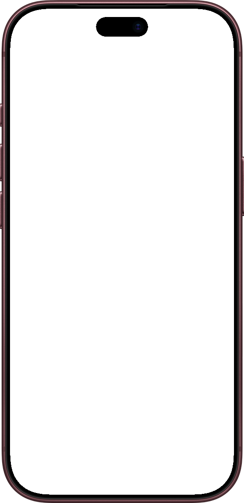
How it works
- Set up the site Add a site, its units (plots, flats, houses or commercial units) and the rooms or areas inside them.
- Walk round and snag Add a photo, mark it up, add a note and set the priority and assignee. One issue per snag.
- Export the report Make a numbered snag list as a PDF with photos and drawings, or as a CSV spreadsheet, and share or print it.
Take a look inside
From the first snag to the finished report.
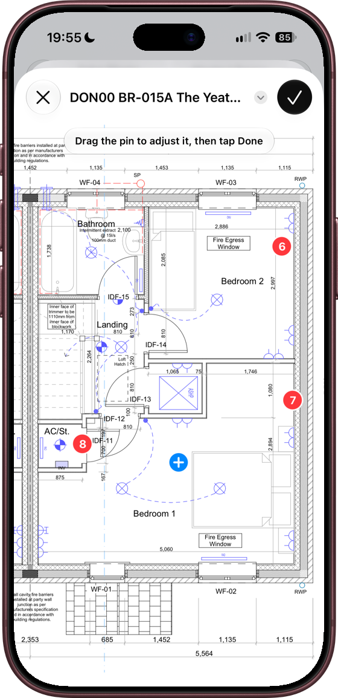
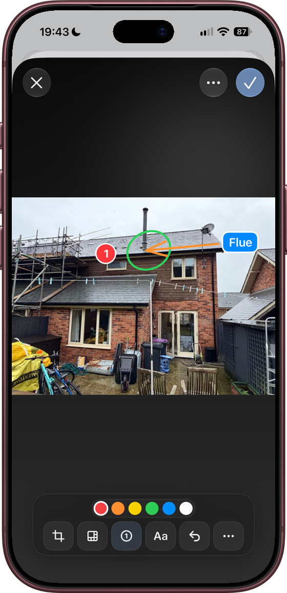
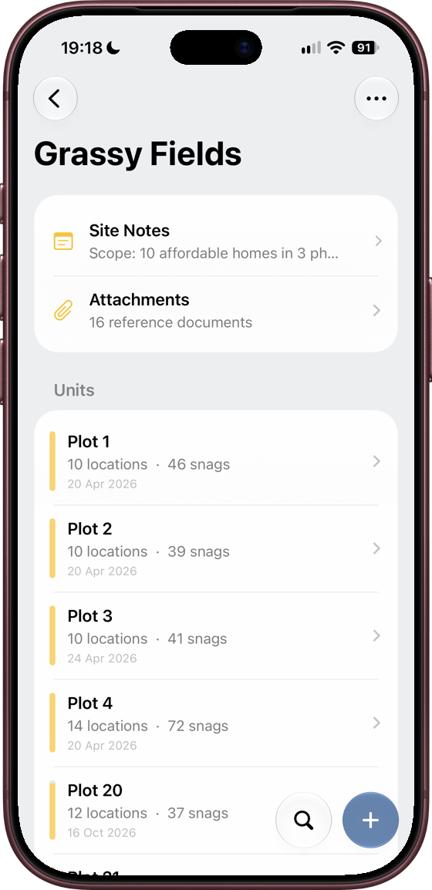
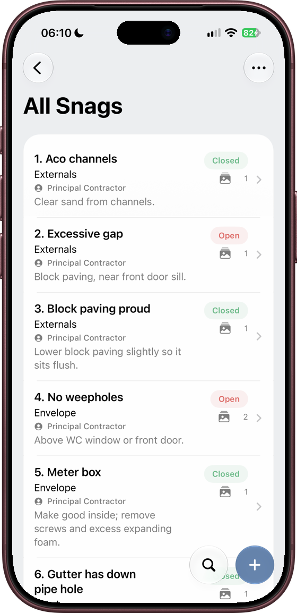
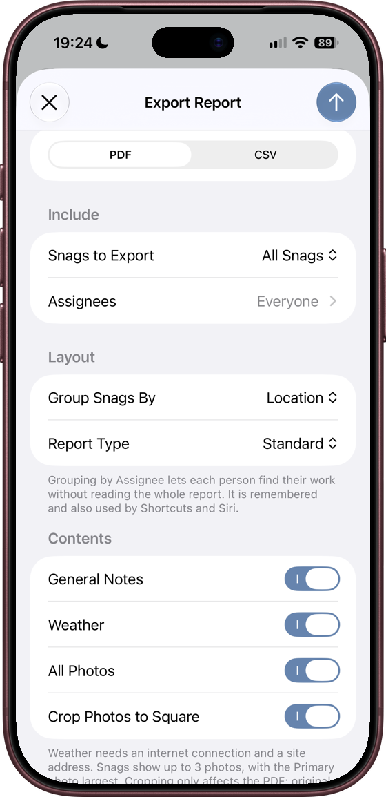
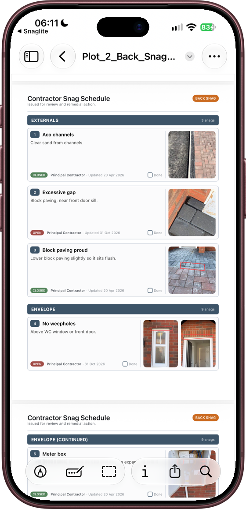
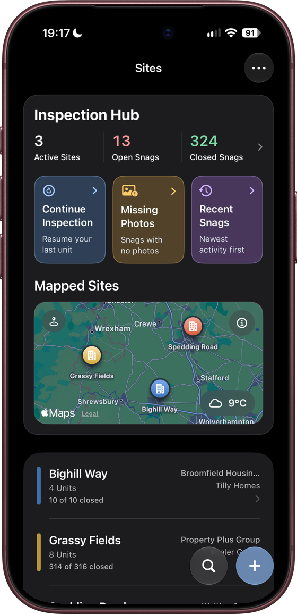
Photos that show exactly what’s wrong
Take up to three photos per snag and mark them up with arrows, shapes, numbered markers and text. Draw roughly, hold still, and Snaglite neatens the stroke into a clean shape.
- Pixelate faces, number plates or anything private
- Your markup is stored separately, so the original photo is never changed

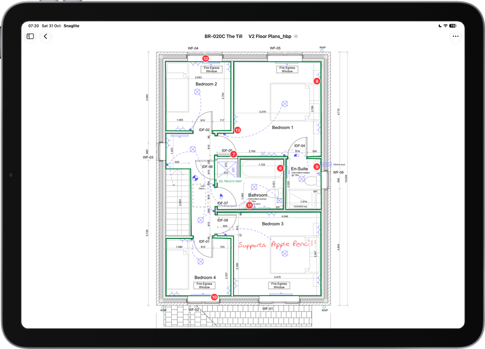
Pin snags on the drawings
Import a plan as a PDF or image and drop a pin where each snag is. Share one site drawing across every unit that uses it, or keep a drawing private to one unit. Mark up drawings with Apple Pencil on iPad.
Pins carry the snag number, so the tradesperson can find the right spot from the printed report.
Reports that are ready to hand over
Export a PDF with your company name and logo, a cover page, a numbered snag schedule with photos, and the marked-up drawings. Choose a standard report, a back snag report for the return visit, or your own title, such as Punch List or Defects List.
- Filter by status, or send each contractor only their own snags
- Group the report by location or assignee
- Export a CSV that uses the same numbering
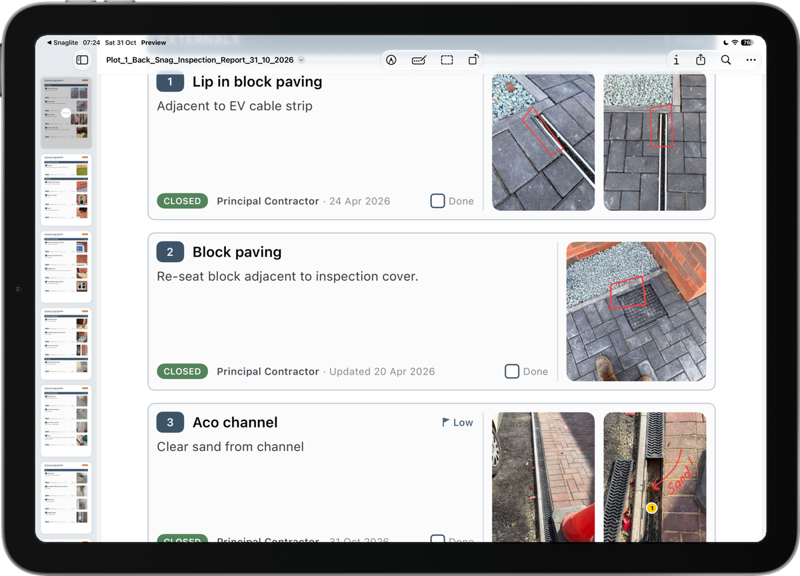
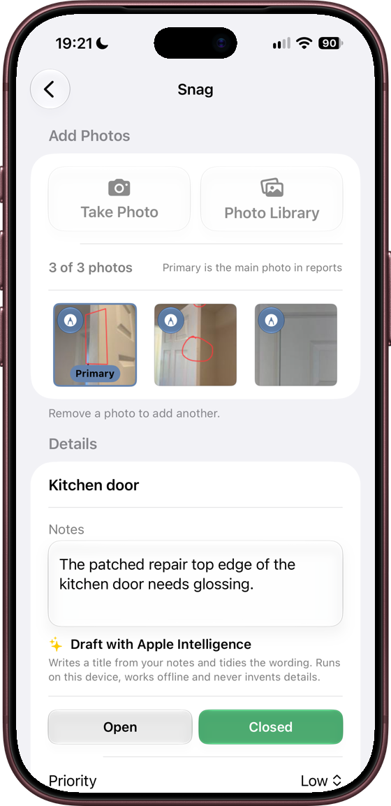
Quick to write up
Dictate with the keyboard microphone and format notes with lists and headings. On supported devices, Draft with Apple Intelligence turns rough notes into a title and a tidy description. It runs entirely on your device.
Swipe actions, bulk select and search keep long snag lists manageable.
Bigger screens when you want them
Snaglite runs on iPhone, iPad and iPhone Duo. Use the sidebar on iPad, or unfold an iPhone Duo mid-inspection and carry on exactly where you were.
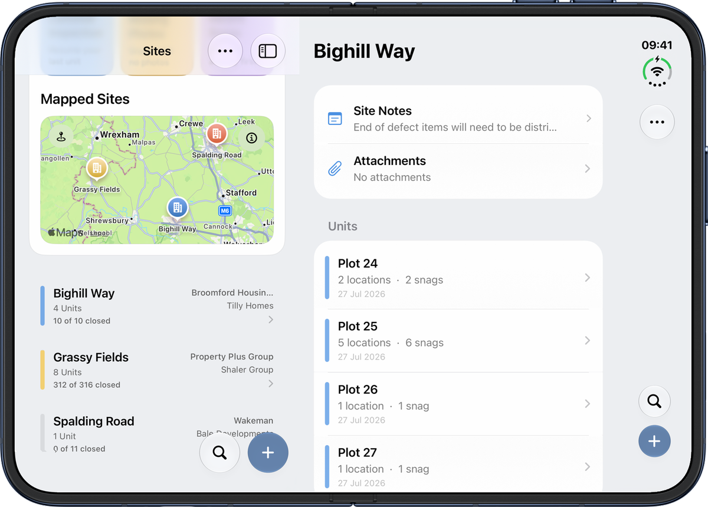
Your data stays yours
Try Snaglite on your next inspection
Snaglite is a subscription app. New subscribers can start with a free trial where one is offered.